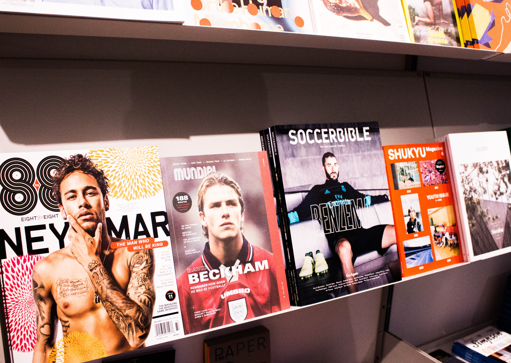

David Robert Joseph Beckham OBE[4] (UK: /ˈbɛkəm/;[5] born 2 May 1975) is an English former professional footballer, the current president & co-owner of Inter Miami CF and co-owner of Salford City.[6] He played for Manchester United, Preston North End, Real Madrid, Milan, LA Galaxy, Paris Saint-Germain and the England national team, for which he held the appearance record for an outfield player until 2016. He is the first English player to win league titles in four countries: England, Spain, the United States and France. He retired in May 2013 after a 20-year career, during which he won 19 major trophies
Beckham's professional club career began with Manchester United, where he made his first-team debut in 1992 at age 17.[9] With United, he won the Premier League title six times, the FA Cup twice, and the UEFA Champions League in 1999.[9] He then played four seasons with Real Madrid,[10] winning the La Liga championship in his final season with the club.[11] In July 2007, Beckham signed a five-year contract with Major League Soccer club LA Galaxy.[12] While a Galaxy player, he spent two loan spells in Italy with Milan in 2009 and 2010. He was the first British footballer to play 100 UEFA Champions League games.[9] In international football, Beckham made his England debut on 1 September 1996 at the age of 21. He was captain for six years, earning 58 caps during his tenure.[13][14] He made 115 career appearances in total, appearing at three FIFA World Cup tournaments, in 1998, 2002 and 2006, and two UEFA European Championship tournaments, in 2000 and 2004.
Known for his range of passing, crossing ability and bending free-kicks as a right winger, Beckham has been hailed as one of the greatest and most recognisable midfielders of his generation, as well as one of the best set-piece specialists of all time.[15][16] He was runner-up in the Ballon d'Or in 1999, twice runner-up for FIFA World Player of the Year and in 2004 was named by Pelé in the FIFA 100 list of the world's greatest living players.[17][18][19] He was inducted into the English Football Hall of Fame in 2008. A global ambassador for the sport, Beckham is regarded as a British cultural icon.[20][21]
 Beckham has consistently ranked among the highest earners in football, and in 2013 was listed as the highest-paid player in the world, having earned over $50 million in the previous 12 months.[22] He has been married to Victoria Beckham since 1999 and they have four children.[23] He has been a UNICEF UK ambassador since 2005, and in 2015 he launched 7: The David Beckham UNICEF Fund.[24] In 2014, MLS announced that Beckham and a group of investors would own Inter Miami CF, which began play in 2020.[25]